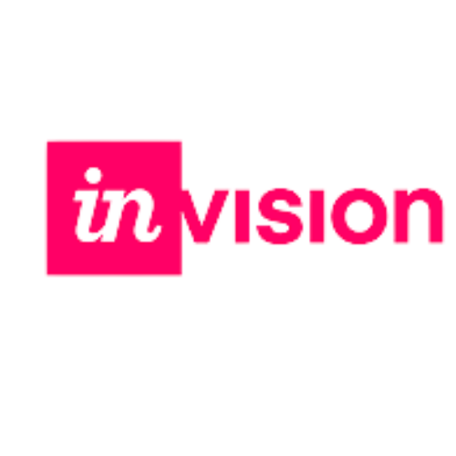

Introduction
Restore Hope Arkansas is a non-profit organization that uses a collective impact model to bring together government and community services in order to follow their mission of reducing incarceration and the need for foster care. The organization ties together the community resources provided for the people and extends a helping hand to those in crisis.
My Role
As a team, we performed user research and competitive analysis, and created user flow, wireframes and prototype in a 3-week sprint. I worked on this as part of my George Washington University UX/UI Design Certificate.
Design Tools


User Research
Research Strategy
The first thing we focused on was our research strategy. In order to identify the flaws in the current UX and UI, we conducted a usability test by interviewing people that fit our user archetype. These were users over the age of 50 who had lost a loved one within the past 5-10 years. Before we began our interviews we first needed to do two things.
First we conduct a competitor analysis. Aside from using and understanding Memento, this also gave us an insight in the market space and provided additional context for the problem we are working on. Secondly we create an interview guide in preparation for Usability Testing. This enabled us to conduct our interviews in a consistent and controlled manner.
Competitor: Analysis
As part of our Competitor Analysis, we conducted an analysis on three apps with similar product offerings to Memento. These were: Thread.Care, Saga and A Lasting Tale.
We focused our research on User Interface elements and User Experience Flows – including the Sign Up process, Recording stage, User Ratings and the Features.
Competitor: Features
CHANGE*Both Thread Care and A Lasting Tale have good ratings but they don't have the volume of reviews to back up that credibility. A consistent theme for all three apps is the demand for users who live overseas.
The distance between relatives can be made easier when using these apps to record conversations.
User Interviews
We wanted to better understand the needs and frustrations of those trying to re-enter society and their families. Through a mix of 1 on 1 in-person and remote interviews, we sought to find a deeper understanding of the issues those individuals face. Together with the team, we prepared an interview script with 14 open-ended questions, focusing on our target audience’s values, motivations, and perspectives. In 2 days, we recruited and interviewed 5 people. We referenced the user interview findings throughout the entire design process. Our main objectives were to:
- Understand the user's need for reintegration services.
- Determine how a user goes about finding ways to get the help and support they or their loved one needs.
- Understand how a user feels about programs aimed at helping felons post-incarceration.
Card Sorting
We wanted to better understand the needs and frustrations of those trying to re-enter society and their families. Through a mix of 1 on 1 in-person and remote interviews, we sought to find a deeper understanding of the issues those individuals face. Together with the team, we prepared an interview script with 14 open-ended questions, focusing on our target audience’s values, motivations, and perspectives. In 2 days, we recruited and interviewed 5 people. We referenced the user interview findings throughout the entire design process. Our main objectives were to:
Interview Transcript
Design System
We came up with a design system to add consistency, structure and communication across all team members. We chose simple readable humanist typeface that would improve reading legibility at both small and large sizes. The colour palette is mature yet modern and has good contrast.
We also implemented icons and friendly illustrations to bring some fun and enjoyment to the app.